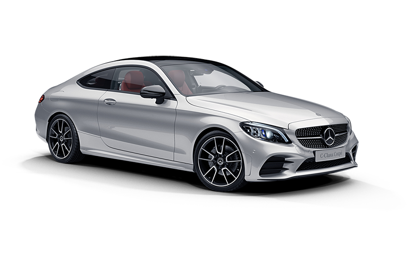
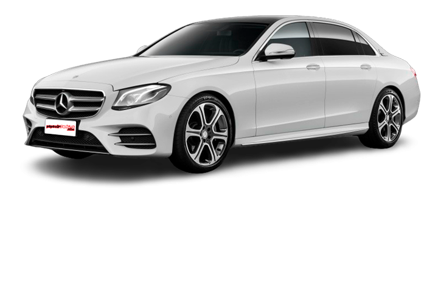
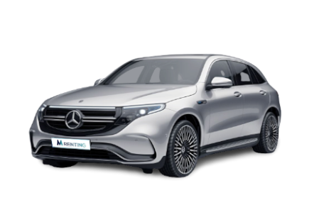

MERCEDES |
|
 |
Mercedes-Benz AG es una empresa alemana fabricante de vehículos, subsidiaria de la compañía Mercedes-Benz Group.La marca es reconocida por sus automóviles de lujo, deportivos, autobuses, camiones, utilitarios (SUVs) y vehículos todoterreno. Su eslogan es: Das Beste oder nichts ("Lo mejor o nada"). |
MERCEDES CLASE C |
|
El Mercedes Clase C es la berlina media, del segmento D, fabricada por Mercedes-Benz desde 1992. Actualmente se comercializa la quinta generación del Mercedes Clase C, presentada en 2021. |
 |
CARACTERISTICAS |
|
Potencia |
194 cv |
peso |
1.565 kg |
precio |
42.600 € |
consumo |
7.2 l |
cilindrada |
2.0 cc |
MERCEDES CLASE S |
|
El Mercedes Clase S es una berlina de lujo, del segmento F, fabricada por Mercedes-Benz desde 1972. Actualmente se comercializa la séptima generación bajo el código W223, presentada en 2020. |
 |
CARACTERISTICAS |
|
Potencia |
300 cv |
peso |
1.895 kg |
precio |
80.000 € |
consumo |
4.3 l |
cilindrada |
1.6 cc |
MERCEDES EQC |
|
El Mercedes EQC es un SUV eléctrico, del segmento D, fabricado por Mercedes-Benz desde 2019. Actualmente se comercializa la primera generación, presentada en 2019. |
 |
CARACTERISTICAS |
|
Potencia |
260 cv |
peso |
1.700 kg |
precio |
83.000 € |
consumo |
electrico |
Bateria |
445 kilometros |
MERCEDES GLA |
|
El Mercedes GLA es un SUV compacto, del segmento C, fabricado por Mercedes desde 2014. Actualmente se comercializa la segunda generación, presentada en 2019. |
 |
CARACTERISTICAS |
Potencia |
170 cv |
peso |
1.660 kg |
precio |
41.000 € |
consumo |
5.9 l |
cilindrada |
2.0 cc |